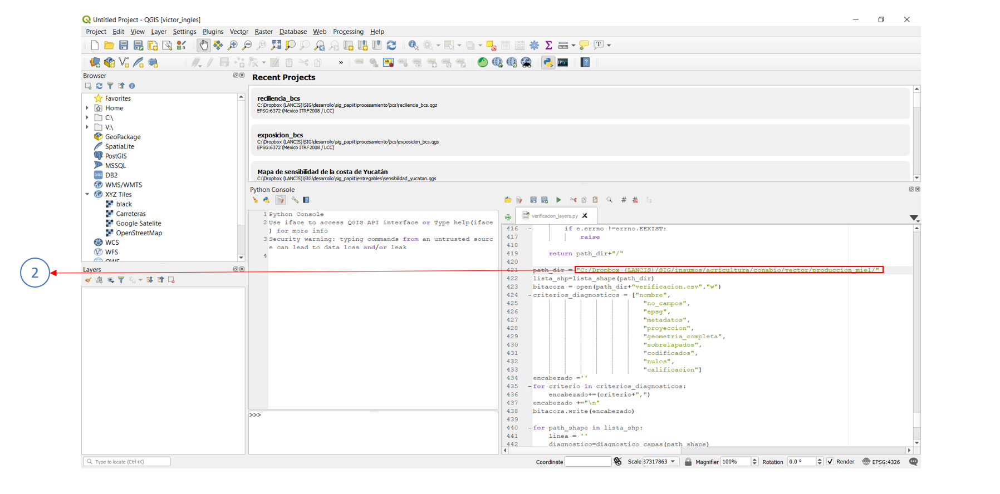

Verificación de capas¶
Los puntos a verificar son los siguientes:
- Proyección Que exista el archivo prj asociado
- Geometría completa Que exista los mismos elementos geométricos que los contenidos en la tabla de atributos
- Sobrelapados Que la capa no cuente con errores topológicos
- Nulos Que no existan campos vacios en la tabla de atributos
- Codificados Que no existan campos con caracteres espeaciales o extraños en su contenido o que datos numéricos esten declardos como texto
- Metadatos Que exista el archivo xml asociado a los metadatos geográficos
Descargar el código de ejemplo
Requerimientos generales¶
Ejemplo:¶
1. Abrir el código¶
Abrir el código verificación_layers.py en Qgis 3.4 o superior, para resolver cualquier duda al respecto, consultar la guia
2. Indicar el directorio¶
El código verifica todas las capas vectoriales contenidas en el directorio indicado en la variable path_dir
path_dir = "C:/Dropbox (LANCIS)/SIG/insumos/agricultura/conabio/vector/produccion_miel/"
Salidas¶
Capas de topología¶
el código crea una carpeta llamada temp, dentro de ella otra carpeta llamada topologia en esta carpeta se guardan los 3 archivos shapefile resultantes de la función topologia
estan nombrados de la siguiente manera:
nombrecapa_error.shp
Capa de puntos que índica la posición en donde 2 o más poligonos no colindan adecuadamente o que su geometría puede causar problemas en algún análisis espacial
nombrecapa_invalido.shp
Capa de poligonos que índica geométria inválida de la capa
nombrecapa_valido.shp
Capa de poligonos que indica la geometría válida de la capa
Imagen de la capa¶
Nota
El código genera una imagen de la capa con el mapa base de openstreetmap sí y solo sí la capa tiene un puntaje de 10 en el criterio de proyección